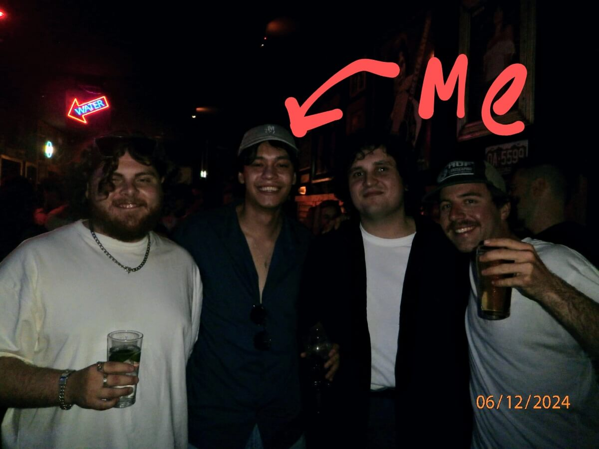

hello, world
This website serves to showcase my publicly available professional work. Why the simple design?
- Accessible: Not everyone has high-speed internet. You won't find clunky images, videos, or advertisements here.
- Nostalgic: I wanted to capture the charm of the early 2000s internet, sparking memories of simpler times that many, myself included, hold dear.
- Refreshing: In contrast to today’s dopamine-driven websites, the simple design encourages your brain to slow down, offering an experience that helps reduce the noise and distractions of the modern internet.
- The Real Reason: I'm not a web developer.
In homage to the playful spirit of the early web, I’ve hidden Easter eggs throughout this site for you to discover. It’s my way of keeping things fun and surprising while showing off a bit of creativity. Can you find them all?
Hint: Think outside the box and look beyond the obvious!
whoami
I am a general nerd with a love for video games, pop culture, and all things cyber security. These days, I mostly focus on cyber defence & strategy.
Challenge: Can you figure out which bar this photo was taken in?
the piece of paper
Murdoch University
Bachelor of Science
Specialisations
Cyber Security and Forensics (Major)
Computer Science (Major)
credentials
- TCM Security Practical Junior Penetration Tester - PJPT
- arcX Foundation Level Threat Intelligence Analyst - FTIA
- Postman API Fundamentals Student Expert
- Infoblox DNS for Security Practitioners
- Microsoft Security Operations Analyst Associate - SC-200
- Microsoft Security, Compliance, and Identity Fundamentals Fundamentals - SC-900
- TCM Security Open-Source Intelligence (OSINT) Fundamentals
- Microsoft Azure Fundamentals - AZ-900
For more credentials, see my Credly.
conferences
List of conferences I've attended:
- Gartner Security & Risk Management Summit Sydney 2025
- AISA PerthSec 2024
- BSides Canberra 2024
- FIRSTCON24 Fukuoka (virtual)
- AISA PerthSec 2023
- BSides Perth 2023
- Cardano Summit Perth 2022
acknowledgements
- NetworkChuck for motivating me to create a website: you STILL need a website RIGHT NOW!! (yes, even in 2024)
- Cameron Askin for inspiring the website design: Cameron's World
- Context Sensitive for the vibes: Context Sensitive - Comfy
blog
contact me
I once believed that my technical skills were among my most valuable assets. As I've grown older, I've come to realise that my ability to communicate is far more important.